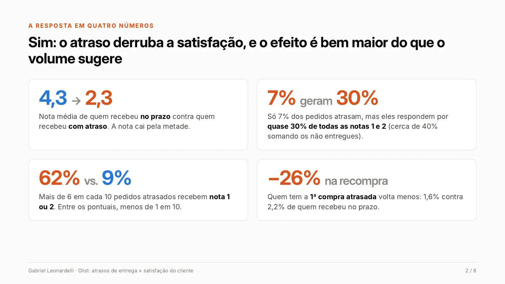
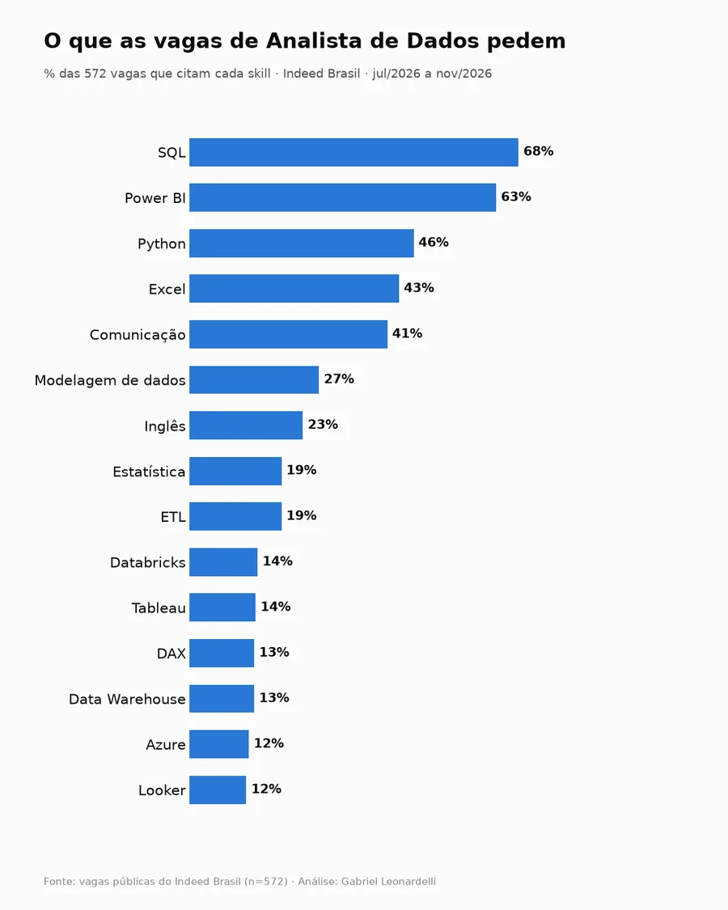

Projetos 3
Clique em um projeto para ver a análise completa, com gráficos e explicações.

Olist: o que atrasa as entregas e quanto isso custa em satisfação
96 mil pedidos de um marketplace brasileiro analisados com Power Query, Power Pivot e DAX.

Analista × Cientista × Engenheiro de Dados: onde as skills se cruzam
1.121 vagas comparadas para mostrar o que cada cargo pede e como migrar entre eles.

Quais skills o mercado pede para Analista de Dados?
572 vagas de 420 empresas coletadas e analisadas, do Júnior ao Sênior.
Como eu trabalho
Começo pela pergunta
Todo projeto parte de uma pergunta de negócio concreta e termina com uma resposta direta e recomendações que alguém pode colocar em prática.
Desconfio dos dados
Documento cada problema de qualidade e confiro os totais de controle. No projeto da Olist, foram 17 problemas tratados antes de qualquer conclusão.
Testo o resultado
Leio amostras para validar o método e testo se a conclusão se sustenta com outras variações do cálculo. As limitações ficam escritas.
Vamos conversar
Se quiser falar sobre uma vaga ou um projeto, me chame no LinkedIn.